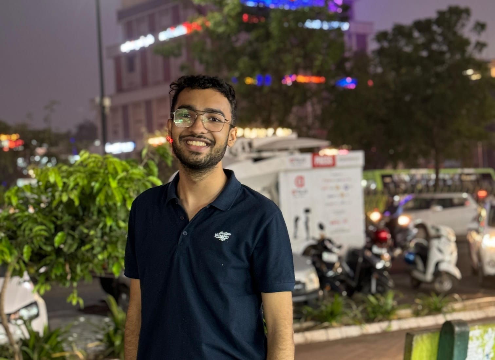

Aman Jeet Jain

Summary
A student at KIIT Bhubaneswar pursuing a BTech in Computer Science Engineering.
Education Background
- Completed Class 10 (ICSE Board) from Swaraj India Public School, Kanpur with a score of 92.6% (Year of Passing: 2020)
- Completed Class 12 (ICSE Board) from Swaraj India Public School, Kanpur with a score of 92% (Year of Passing: 2022)
- Currently pursuing B.Tech in Computer Science and Engineering (2nd year) at Kalinga Institute of Industrial Technology (KIIT), Bhubaneswar (Batch: 2023-2027)
Skills
- Violin ⭐⭐⭐⭐
- C programming ⭐⭐⭐
- C++ ⭐⭐⭐
- Web Development ⭐
My Hobbies |
Contact Me